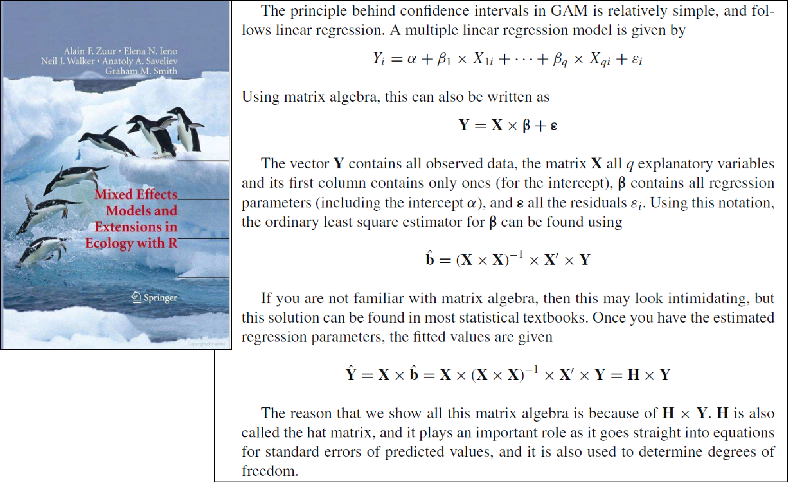
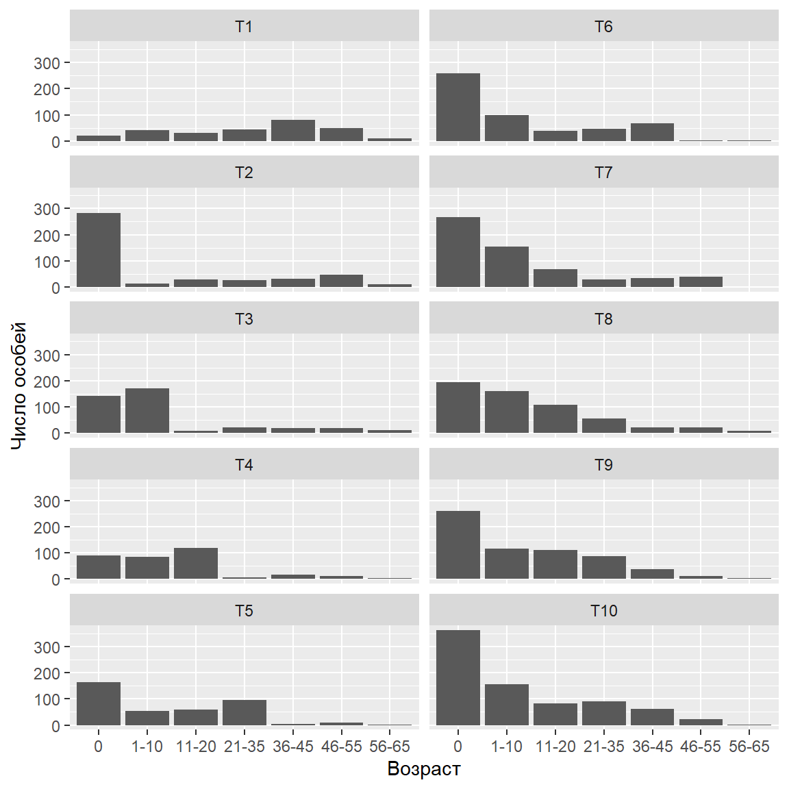
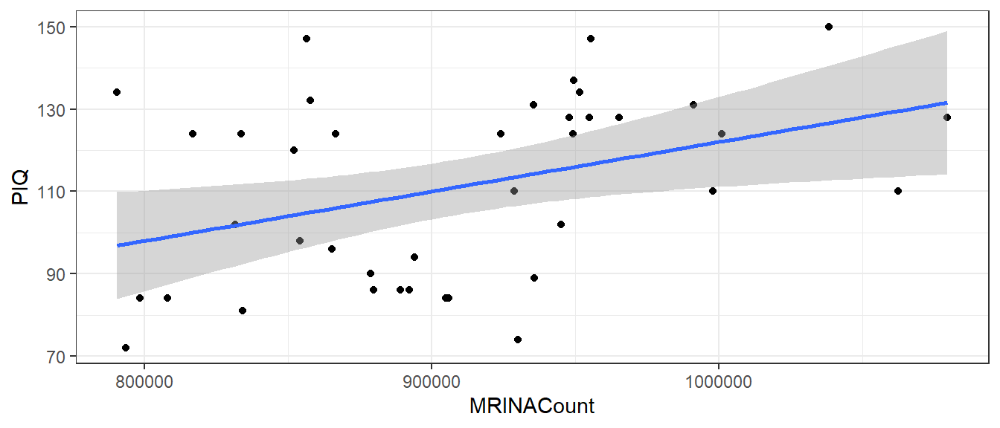
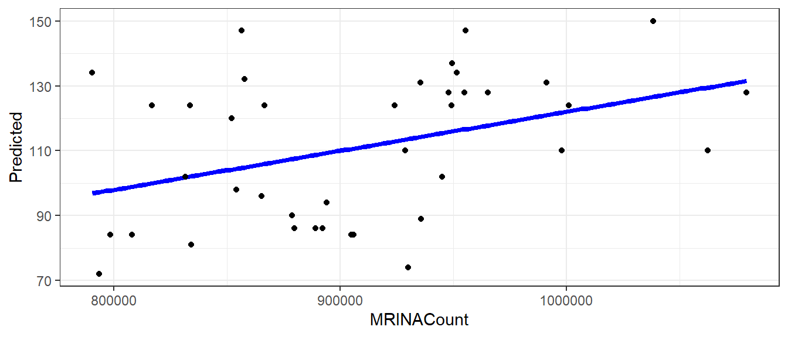
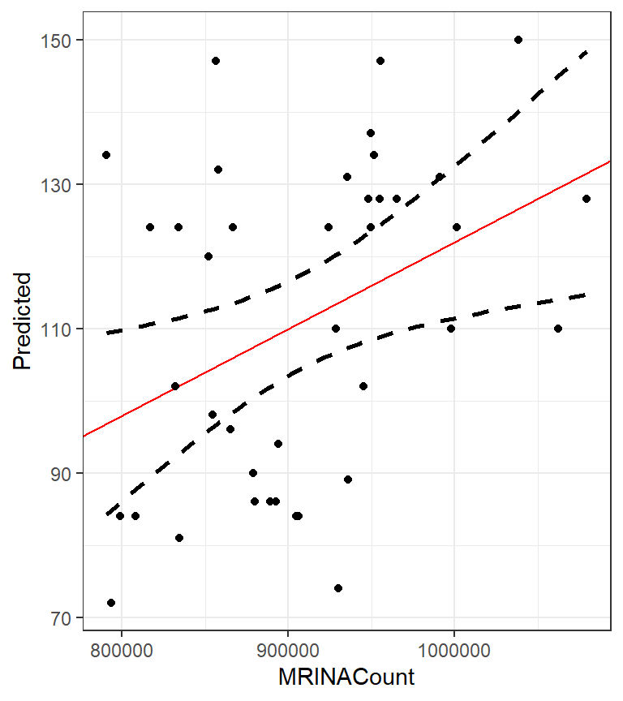
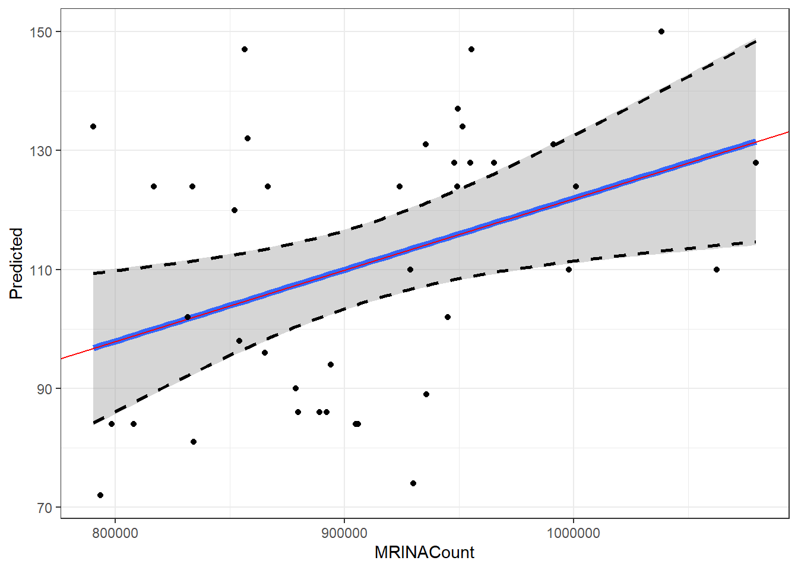

- Объяснить что такое матрицы и какие бывают их основные разновидности
- Выполнить базовые операции с матрицами с использованием функций R
- Применить в среде R методы матричной алгебры для решения простейших задач
Вы сможете
Зачем понадобилась эта лекция?

Решите задачу
В популяции некоторого организма в момент времени \(t_1\) представлено четыре возрастные группы:
| Возрастная группа | Количество особей |
|---|---|
| 0+ | 100 |
| 1+ | 10 |
| 2+ | 5 |
| 3+ | 1 |
Какова будет численность возрастных групп в момент времени \(t_2\) если известно, что
- каждая особь возрастом 2+ оставляет 10 потомков, а каждая особь возрастом 3+ - 20 потомков.
- вероятность выживания особей при переходе от \(t_1\) к \(t_2\) описывается следующими величинами
| Переход из младшей группы в старшую | Вероятность выживания |
|---|---|
| 0+ - 1+ | 0.1 |
| 1+ - 2+ | 0.5 |
| 2+ - 3+ | 0.3 |
Простое, но нерациональное решение
| Возрастная группа | Количество особей в момент времени \(t_2\) |
|---|---|
| 0+ | \(5 \cdot 10 + 1 \cdot 20 = 70\) |
| 1+ | \(100 \cdot 0.1 = 10\) |
| 2+ | \(10 \cdot 0.5 = 5\) |
| 3+ | \(5 \cdot 0.3 = 1.5\) |
Рациональное решение
Демографический вектор в момент времени \(t_1\)
t1 <- c(100, 10, 5, 1) t1
## [1] 100 10 5 1
Рациональное решение
Демографическая матрица Лесли
\[ \begin{pmatrix} F_1 & F_2 & F_3 & F_4 \\ P_{0+ -1+}& 0 & 0 & 0 \\ 0 & P_{1+-2+} & 0 & 0 \\ 0 & 0 & P_{2+-3+} & 0 \\ \end{pmatrix} \]
lesley <- matrix(c(c(0, 0, 10, 20), c(0.1, 0, 0, 0), c(0, 0.5, 0, 0), c(0, 0, 0.3, 0)), nrow = 4, byrow = T) lesley
## [,1] [,2] [,3] [,4] ## [1,] 0.0 0.0 10.0 20 ## [2,] 0.1 0.0 0.0 0 ## [3,] 0.0 0.5 0.0 0 ## [4,] 0.0 0.0 0.3 0
Рациональное решение - решение средствами матричной алгебры
lesley %*% t1
## [,1] ## [1,] 70.0 ## [2,] 10.0 ## [3,] 5.0 ## [4,] 1.5
Зачем нужны матрицы?
Матричные объекты
- Есть много типов объектов, для которых такое выражение оказывается наиболее естественным (изображения, описания многомерных объектов и т.д.)
- В матрицах, как и в обычных числах, скрыта информация, которую можно извлекать и преобразовывать по определенным правилам
Структура матриц
\[\begin{pmatrix} a_{11} & a_{12} & \cdots & a_{1c} \\ a_{21} & a_{22} & \cdots & a_{2c} \\ \vdots & \vdots & \ddots & \vdots \\ a_{r1} & a_{r2} & \cdots & a_{rc} \end{pmatrix} \]
Размер (порядок) матрицы \(r \times c\)
Разновидности матриц
Вектор-строка (row matrix)
\[ \textbf {A} = \begin{pmatrix} 1 & 2 & 3 \end{pmatrix} \]
Вектор-столбец (column matrix)
\[ \textbf {B} = \begin{pmatrix} 1 \\ 4 \\ 7 \\ 10 \end{pmatrix} \]
Разновидности матриц
Прямоугольные матрицы (rectangular matrices)
\[ \textbf {C} = \begin{pmatrix} 1 & 2 & 3 \\ 4 & 5 & 6 \\ 7 & 8 & 9 \\ 10 & 11 & 12 \end{pmatrix} \]
\[ \textbf {D} = \begin{pmatrix} 1 & 2 & 3 \\ 4 & 5 & 6 \end{pmatrix} \]
В таком виде обычно представляются исходные данные
Квадратные матрицы (square matrices)
Это наиболее “операбельные” матрицы
\[ \textbf {E} = \begin{pmatrix} 1 & 2 & 3 \\ 4 & 5 & 6 \\ 7 & 8 & 9 \end{pmatrix} \]
Диагональные матрицы (diagonal matrix)
\[ \textbf {F} = \begin{pmatrix} 1 & 0 & 0 & 0 \\ 0 & 5 & 0 & 0 \\ 0 & 0 & 9 & 0 \\ 0 & 0 & 0 & 1 \end{pmatrix} \]
Квадратные матрицы (square matrices)
Единичная матрица (identity matrix) \[ \textbf {I} = \begin{pmatrix} 1 & 0 & 0 & 0 \\ 0 & 1 & 0 & 0 \\ 0 & 0 & 1 & 0 \\ 0 & 0 & 0 & 1 \end{pmatrix} \]
Единичная матрица (обозначение \(\textbf{I}\)) занимают особое место в матричной алгебре.
Она выполняет ту же роль, которую выполняет единица в обычной алгебре.
Особенность квадратных матриц
Для квадратных матриц могут быть найдены (но не обязательно существуют) некоторые важные для матричной алгебры показатели: определитель, инверсия, собственные значения и собственные векторы
Задание
Создайте с помощью R следующую матрицу
\[ \begin{pmatrix} 1 & 2 & 3 & 4 \\ 5 & 6 & 7 & 8 \\ 9 & 10 & 11 & 12 \\ \end{pmatrix} \]
Решение
matrix(1:12, ncol = 3, byrow = TRUE)
## [,1] [,2] [,3] ## [1,] 1 2 3 ## [2,] 4 5 6 ## [3,] 7 8 9 ## [4,] 10 11 12
Задание
Создайте с помощью R единичную матрицу
\[ \begin{pmatrix} 1 & 0 & 0 & 0 \\ 0 & 1 & 0 & 0 \\ 0 & 0 & 1 & 0 \\ 0 & 0 & 0 & 1 \end{pmatrix} \]
Решение
diag(rep(1,5))
## [,1] [,2] [,3] [,4] [,5] ## [1,] 1 0 0 0 0 ## [2,] 0 1 0 0 0 ## [3,] 0 0 1 0 0 ## [4,] 0 0 0 1 0 ## [5,] 0 0 0 0 1
Операции с матрицами
Транспонирование матриц
A <- matrix(1:12, ncol = 3) A
## [,1] [,2] [,3] ## [1,] 1 5 9 ## [2,] 2 6 10 ## [3,] 3 7 11 ## [4,] 4 8 12
Транспонированная матрица \(\textbf{A}\)
B <- t(A) B
## [,1] [,2] [,3] [,4] ## [1,] 1 2 3 4 ## [2,] 5 6 7 8 ## [3,] 9 10 11 12
Сложение матриц
A + 4
## [,1] [,2] [,3] ## [1,] 5 9 13 ## [2,] 6 10 14 ## [3,] 7 11 15 ## [4,] 8 12 16
A + A
## [,1] [,2] [,3] ## [1,] 2 10 18 ## [2,] 4 12 20 ## [3,] 6 14 22 ## [4,] 8 16 24
Но! Нельзя складывать матрицы разных размеров
A + B
## Error in A + B: non-conformable arrays
Биологическое приложение
Предположим, что мы подсчитывали двумя разными методами крупных и мелких животных трех видов в одних и тех же пробах
## Sp1 Sp2 Sp3 ## Sample1 11 11 9 ## Sample2 13 12 9 ## Sample3 13 11 13 ## Sample4 8 16 7 ## Sample5 8 12 8
## Sp1 Sp2 Sp3 ## Sample1 56 46 46 ## Sample2 62 53 46 ## Sample3 40 53 44 ## Sample4 59 52 50 ## Sample5 45 52 54
Биологическое приложение
Общее обилие
Large + Small
## Sp1 Sp2 Sp3 ## Sample1 67 57 55 ## Sample2 75 65 55 ## Sample3 53 64 57 ## Sample4 67 68 57 ## Sample5 53 64 62
Простое умножение
Умножение на число
A * 4
## [,1] [,2] [,3] ## [1,] 4 20 36 ## [2,] 8 24 40 ## [3,] 12 28 44 ## [4,] 16 32 48
Простое умножение матрицы на вектор возможно только если число элементов в векторе равно числу строк в матрице
A * c(10, 11, 12, 13)
## [,1] [,2] [,3] ## [1,] 10 50 90 ## [2,] 22 66 110 ## [3,] 36 84 132 ## [4,] 52 104 156
Все элементы первой строки матрицы умножаются на первый элемент вектора, все элементы второй строки на второй элемент вектора и т.д.
Биологическое применение
Допустим, учет организмов в части описаний проходил не на всей выборке, а лишь в ее части.
Rpocessed_portion <- c(1, 1, 1/2, 1/3, 1/4) Processed_Factor <- 1/Rpocessed_portion
Small * Processed_Factor
## Sp1 Sp2 Sp3 ## Sample1 56 46 46 ## Sample2 62 53 46 ## Sample3 80 106 88 ## Sample4 177 156 150 ## Sample5 180 208 216
Скалярное произведение векторов
Допустимо только для векторов одинаковой размерности
\[ \textbf{a} \bullet \textbf{b} = \begin{pmatrix} a_1 \\ a_2 \\ a_3 \\ a_4 \\ a_5 \\ a_6 \\ a_7 \end{pmatrix} \times \begin{pmatrix} b_1 & b_2 & b_3 & b_4 & b_5 & b_6 & b_7 \end{pmatrix} = a_1 \cdot b_1 + a_2 \cdot b_2 + \ldots + a_7 \cdot b_7 = x \]
Результат этой операции - число (скаляр)
Биологическое применение
Сколько особей родится в популяции, если мы знаем репродуктивные характеристики всех возрастных групп? \[ \begin{pmatrix} N_1 \\ N_2 \\ N_3 \\ N_4 \\ N_5 \\ N_6 \\ N_7 \end{pmatrix} \times \begin{pmatrix} F_1 & F_2 & F_3 & F_4 & F_5 & F_6 & F_7 \end{pmatrix} \]
N <- c(20, 40, 32, 45, 80, 50, 10) Fert <- c( 0, 0, 1, 2, 2, 0, 0) t(N) %*% (Fert)
## [,1] ## [1,] 282
Умножение матриц
Умножать можно только в том случае, если число строк одной из матриц равно числу столбцов у другой матрицы.
A
## [,1] [,2] [,3] ## [1,] 1 5 9 ## [2,] 2 6 10 ## [3,] 3 7 11 ## [4,] 4 8 12
B
## [,1] [,2] [,3] [,4] ## [1,] 1 2 3 4 ## [2,] 5 6 7 8 ## [3,] 9 10 11 12
A %*% B
## [,1] [,2] [,3] [,4] ## [1,] 107 122 137 152 ## [2,] 122 140 158 176 ## [3,] 137 158 179 200 ## [4,] 152 176 200 224
У первой матрицы (A) число строк равно числу столбцов у второй матрицы (B)
Умножение матриц
Порядок имеет смысл! Если поменять местами матрицы A и B, то изменится и результат
B %*% A
## [,1] [,2] [,3] ## [1,] 30 70 110 ## [2,] 70 174 278 ## [3,] 110 278 446
Умножение матриц
Удалим из матрицы B последнюю строчку
C <- B[-3, ] C
## [,1] [,2] [,3] [,4] ## [1,] 1 2 3 4 ## [2,] 5 6 7 8
Такое произведение возможно
C %*% A
## [,1] [,2] [,3] ## [1,] 30 70 110 ## [2,] 70 174 278
Но невозможно такое произведение
A %*% C
## Error in A %*% C: non-conformable arguments
Умножение матриц
Если матрица (‘A’) не квадратная, то нельзя произвести такое умножение
A %*% A
Схема умножения матриц
M1 <- matrix(c(1, 2, 3, 4, 5, 6), byrow = T, ncol = 3) M2 <- matrix(7:12, byrow = T, ncol = 2) M1 %*% M2
## [,1] [,2] ## [1,] 58 64 ## [2,] 139 154
\[ \begin{pmatrix} 1 & 2 & 3 \\ 4 & 5 & 6 \\ \end{pmatrix} \times \begin{pmatrix} 7 & 8 \\ 9 & 10\\ 11 & 12\\ \end{pmatrix} = \begin{pmatrix} 7 \cdot 1 + 9 \cdot 2 + 11 \cdot 3 & 8 \cdot 1 + 10 \cdot 2 + 12 \cdot 3 \\ 7 \cdot 4 + 9 \cdot 5 + 11 \cdot 6 & 8 \cdot 4 + 10 \cdot 5 + 12 \cdot 6 \\ \end{pmatrix} = \\ = \begin{pmatrix} 58 & 64 \\ 139 & 154\\ \end{pmatrix} \]
Схема умножения матриц
\[ \begin{pmatrix} A & B \\ C & D \\ \end{pmatrix} \times \begin{pmatrix} E & F \\ G & H\\ \end{pmatrix} = \begin{pmatrix} (A \cdot E + B \cdot G) & (A \cdot F + B \cdot H ) \\ (C \cdot E + D \cdot G) & (C \cdot F + D \cdot H) \\ \end{pmatrix} \]
Биологическое применение
Простейший пример использования умножения матриц - построение модели динамики демографической структуры популяции Для вычислений необходим начальный демографический вектор и матрица Лесли
\[ \begin{pmatrix} F_1 & F_2 & F_3 & F_4 & F_5 & F_6 & F_7 \\ P_{1-2}& 0 & 0 & 0 & 0 & 0 & 0 \\ 0 & P_{2-3} & 0 & 0 & 0 & 0 & 0 \\ 0 & 0 & P_{3-4} & 0 & 0 & 0 & 0 \\ 0 & 0 & 0 & P_{4-5} & 0 & 0 & 0 \\ 0 & 0 & 0 & 0 & P_{5-6} & 0 & 0 \\ 0 & 0 & 0 & 0 & 0 & P_{6-7} & 0 \end{pmatrix} \times \begin{pmatrix} N1_t \\ N2_t \\ N3_t \\ N4_t \\ N5_t \\ N6_t \\ N7_t \end{pmatrix} = \begin{pmatrix} N1_{t+1} \\ N2_{t+1} \\ N3_{t+1} \\ N4_{t+1} \\ N5_{t+1} \\ N6_{t+1} \\ N7_{t+1} \end{pmatrix} \]
Простейшая демографическая модель
Демографический вектор в момент времени \(t\)
## Age T1 ## 1 0 20 ## 2 1-10 40 ## 3 11-20 32 ## 4 21-35 45 ## 5 36-45 80 ## 6 46-55 50 ## 7 56-65 10
Матрица Лесли
## [,1] [,2] [,3] [,4] [,5] [,6] [,7] ## [1,] 0.0 0.0 1.0 2.0 2.0 0.0 0 ## [2,] 0.6 0.0 0.0 0.0 0.0 0.0 0 ## [3,] 0.0 0.7 0.0 0.0 0.0 0.0 0 ## [4,] 0.0 0.0 0.8 0.0 0.0 0.0 0 ## [5,] 0.0 0.0 0.0 0.7 0.0 0.0 0 ## [6,] 0.0 0.0 0.0 0.0 0.6 0.0 0 ## [7,] 0.0 0.0 0.0 0.0 0.0 0.2 0
Демографическая струкутра в момент времени \(t+1\)
Pop$T2 <- as.vector( Lesl %*% (Pop$T1 )) Pop$T3 <- as.vector( Lesl %*% (Pop$T2 )) Pop$T4 <- as.vector( Lesl %*% (Pop$T3 )) Pop$T5 <- as.vector( Lesl %*% (Pop$T4 )) Pop$T6 <- as.vector( Lesl %*% (Pop$T5 )) Pop$T7 <- as.vector( Lesl %*% (Pop$T6 )) Pop$T8 <- as.vector( Lesl %*% (Pop$T7 )) Pop$T9 <- as.vector( Lesl %*% (Pop$T8 )) Pop$T10 <- as.vector( Lesl %*% (Pop$T9 ))
Демографическая струкутра в момент времени \(t+1\)

Задание
Представим себе, что вы решили купить четыре товара, по следующим ценам
\[ \begin{matrix} Товар & Цена \\ \hline Товар 1 & 10 \\ Товар 2 & 20 \\ Товар 3 & 30 \\ Товар 4 & 40 \\ \end{matrix} \]
Прямых выходов на продавца у вас нет, но есть три посредника, которые выставляют следующие “накрутки” цен.
Какой из посредников выгоднее?
\[ \begin{matrix} & Товар 1 & Товар 2 & Товар 3 & Товар 4 \\ \hline Посредник 1 & 0.1& 0.15& 0.05& 0.05 \\ Посредник 2 & 0.15& 0.15& 0.09& 0.01 \\ Посредник 3 & 0.2& 0.05& 0.1& 0.1 \end{matrix} \]
Вычисление корреляций через произведение матриц
\[\bf{Cor} = \frac{\bf{{X}'_{stand}}\bf{X_{stand}}}{N-1}\]
Используем известные нам данные по размеру головного мозга
brain <- read.csv("data/IQ_brain.csv", header = TRUE)
br <- brain[complete.cases(brain), -1]
br <- as.matrix(br)
br_scaled <- scale(br) #Стандартизуем значения
t(br_scaled) %*% br_scaled / (nrow(br_scaled) - 1)
## FSIQ VIQ PIQ Weight Height MRINACount ## FSIQ 1.0000 0.9451 0.93443 -0.05148 -0.1184 0.334 ## VIQ 0.9451 1.0000 0.77602 -0.07609 -0.1190 0.300 ## PIQ 0.9344 0.7760 1.00000 0.00251 -0.0932 0.378 ## Weight -0.0515 -0.0761 0.00251 1.00000 0.6996 0.513 ## Height -0.1184 -0.1190 -0.09316 0.69961 1.0000 0.588 ## MRINACount 0.3337 0.3003 0.37778 0.51338 0.5884 1.000
Задание
Используя датасет iris, вычислите корреляцию между Sepal.Length и Sepal.Width
Решение
L <- iris$Sepal.Length W <- iris$Sepal.Width matr <- as.matrix(data.frame(L, W), ncol = 2) matr_scaled <- scale(matr) t(matr_scaled) %*% matr_scaled / (nrow(matr_scaled) - 1)
## L W ## L 1.000 -0.118 ## W -0.118 1.000
Проверим
cor(matr)
## L W ## L 1.000 -0.118 ## W -0.118 1.000
Важные положения теории матриц
Если существует произведение матриц \(\textbf{BC}\), то не обязательно существует \(\textbf{CB}\)
B <- matrix(1:24, ncol = 4) C <- matrix(1:12, ncol = 3) B %*% C
## [,1] [,2] [,3] ## [1,] 130 290 450 ## [2,] 140 316 492 ## [3,] 150 342 534 ## [4,] 160 368 576 ## [5,] 170 394 618 ## [6,] 180 420 660
HO!
C %*% B
## Error in C %*% B: non-conformable arguments
Такое произведение невозможно
Всегда существует такое произведение матриц \(\textbf{CС'}\) и \(\textbf{C'С}\)
C %*% t(C)
## [,1] [,2] [,3] [,4] ## [1,] 107 122 137 152 ## [2,] 122 140 158 176 ## [3,] 137 158 179 200 ## [4,] 152 176 200 224
t(C) %*% C
## [,1] [,2] [,3] ## [1,] 30 70 110 ## [2,] 70 174 278 ## [3,] 110 278 446
Произведение матриц \(\textbf{BC}\) как правило не равно \(\textbf{CB}\)
B <- matrix(1:9, ncol = 3) C <- matrix(11:19, ncol = 3) B %*% C
## [,1] [,2] [,3] ## [1,] 150 186 222 ## [2,] 186 231 276 ## [3,] 222 276 330
C %*% B
## [,1] [,2] [,3] ## [1,] 90 216 342 ## [2,] 96 231 366 ## [3,] 102 246 390
\([\textbf{BC}]' = \textbf{C}'\textbf{B}'\)
t(B %*% C)
## [,1] [,2] [,3] ## [1,] 150 186 222 ## [2,] 186 231 276 ## [3,] 222 276 330
t(C) %*% t(B)
## [,1] [,2] [,3] ## [1,] 150 186 222 ## [2,] 186 231 276 ## [3,] 222 276 330
Произведение \(\textbf{BB'}\) и \(\textbf{B'B}\) всегда дает симметричную матрицу
B %*% t(B)
## [,1] [,2] [,3] ## [1,] 66 78 90 ## [2,] 78 93 108 ## [3,] 90 108 126
t(B) %*% B
## [,1] [,2] [,3] ## [1,] 14 32 50 ## [2,] 32 77 122 ## [3,] 50 122 194
Определтель матрицы
Определитель матрицы — это некоторое число.
По значению этого числа можно определить есть ли у матрицы некоторые свойства (например, обратима ли матрица).
Определитель бывает только у квадратных матриц.
Определтель матрицы
Матрицы, имеющие определитель равный нулю, называются сингулярными матрицами.
B
## [,1] [,2] [,3] ## [1,] 1 4 7 ## [2,] 2 5 8 ## [3,] 3 6 9
det(B)
## [1] 0
НО!
B[3,3] <- B[3,3] + 1 B
## [,1] [,2] [,3] ## [1,] 1 4 7 ## [2,] 2 5 8 ## [3,] 3 6 10
det(B)
## [1] -3
Обращение (инверсия) матриц
В матричной алгебре нет процедуры деления. Вместо нее используют обращение матриц.
\[ \textbf{X}^{-1}\textbf{X} = \textbf{I} \]
Произведение инверсии матрицы и исходной матрицы дает единичную матрицу
Обращение (инверсия) матриц
Только некоторые квадратные матрицы, могут иметь обратную матрицу.
Поэтому для квадратных матриц справедливо \[\textbf{X} \textbf{X}^{-1} = \textbf{X}^{-1} \textbf{X}\]
Обращение (инверсия) матриц
Для матриц, определитель которых равен нулю, обратной матрицы не существует
Обращение матриц в среде R
Создадим матрицу
## [,1] [,2] [,3] ## [1,] 1 2 3 ## [2,] 4 5 6 ## [3,] 7 8 10
Ее определитель
det(X)
## [1] -3
Обращение матриц в среде R
Обратная матрица
solve(X)
## [,1] [,2] [,3] ## [1,] -0.667 -1.33 1 ## [2,] -0.667 3.67 -2 ## [3,] 1.000 -2.00 1
По определению, \(\textbf{X}^{-1}\textbf{X} = \textbf{I}\)
round(solve(X) %*% X )
## [,1] [,2] [,3] ## [1,] 1 0 0 ## [2,] 0 1 0 ## [3,] 0 0 1
Примнение обращенных матриц
Решение систем линейных уравнений
Простейший случай использования обратных матриц - решение систем линейных уравнений \[ \begin{cases} 1x + 2y + 3z = 2\\ 4x + 5y + 6z = 4 \\ 7x + 8y + 10z = 10 \end{cases} \]
Эту систему можно представить в матричном виде
\[ \begin{pmatrix} 1 & 2 & 3 \\ 4 & 5 & 6 \\ 7 & 8 & 10 \end{pmatrix} \begin{pmatrix} x \\ y \\ z \end{pmatrix} = \begin{pmatrix} 2 \\ 4 \\ 10 \end{pmatrix} \]
Тогда
\[ \begin{pmatrix} x \\ y \\ z \end{pmatrix} = \begin{pmatrix} 1 & 2 & 3 \\ 4 & 5 & 6 \\ 7 & 8 & 10 \end{pmatrix} ^{-1} \begin{pmatrix} 2 \\ 4 \\ 10 \end{pmatrix} \]
Зачем нужен определитель
Если определитель матрицы коэффициентов не равен нулю, то для этой матрицы возможно обращение, а система уравнений имеет решение.
С помощью определителя матрицы коэффициентов можно определить будет ли система уравнений иметь решение.
Если определитель равен нулю, то инверсия матрицы невозможна и система уравнений имеет бесконечное количество решений.
Задание
Решите приведенную систему уравнений с использованием матричной алгебры
\[ \begin{cases} 1x + 2y + 3z = 2\\ 4x + 5y + 6z = 4 \\ 7x + 8y + 10z = 10 \end{cases} \]
Решение
Coef <- matrix(c(1 , 2 , 3 ,
4 , 5 , 6 ,
7 , 8 , 10), byrow = T, ncol = 3)
Val <- c(2,4,10)
solve(Coef) %*% Val
## [,1] ## [1,] 3.33 ## [2,] -6.67 ## [3,] 4.00
Проверим
round(1*3.33 + 2*-6.67 + 3*4.00)
## [1] 2
round(4*3.33 + 5*-6.67 + 6*4.00)
## [1] 4
round(7*3.33 + 8*-6.67 + 10*4.00)
## [1] 10
Задание
Решите систему из двух уравнений
\[ \left\{\begin{array}{c}2x-4y=-6\\ 2x+y=4\end{array}\right. \]
Подбор параметров линейной регрессии методом наименьших квадратов с использованием матричной алгебры
Линейная регрессия в матричном виде
Модель линейной регрессии \(y_i = b_0 + b_1x_i + e_i\) можно записать в матричном виде
\[ \mathbf{y} = \mathbf{X}{\pmb{\beta}} + \mathbf{e} \] Или
\[ \mathbf{\hat{y}} = \mathbf{X}{\pmb{\beta}} \]
Здесь
\(\textbf{y}\) - вектор наблюдаемых значений зависимой переменной
\(\mathbf{\hat{y}}\) - вектор предсказанных значений зависимой переменной
\(\textbf{X}\) - модельная матрица
\(\pmb{\beta}\) - вектор коэффициентов модели \(b_0 + b_1x\): \((b_0, b_1)\)
\(\mathbf{e}\) — вектор остатков.
Модельная матрица
Это матрица, описывающая “поведение” предикторов.
Для модели \(y_i = b_0 + b_1x_i + e_i\)
\[ \mathbf{X} = \begin{pmatrix} 1 & x_1 \\ 1 & x_2 \\ \vdots & \vdots\\ 1 & x_n \\ \end{pmatrix} \]
Решение этого уравнения
Умножим обе части уравнения на транспонированную матрицу \(\textbf{X}'\)
\[ \textbf{X}' \textbf{y} = \textbf{X}'\textbf{X} \pmb{\beta}\]
Матрица \(\textbf{X}'\textbf{X}\) - это всегда квадратная матрица. Ее можно обратить.
Тогда \[ \pmb{\beta} = [\textbf{X}'\textbf{X}]^{-1}[\textbf{X}'\textbf{y}] \]
Подбираем коэффициенты с помощью фунции lm()
brain <- read.csv("data/IQ_brain.csv", header = TRUE)
M_brain <- lm(PIQ ~ MRINACount, data = brain)
Коэффициенты модели
coefficients(M_brain)
## (Intercept) MRINACount ## 1.74376 0.00012
Графическое отражение, построенное с помощью geom_smooth()
library(ggplot2) theme_set(theme_bw()) ggplot(brain, aes(x = MRINACount, y = PIQ)) + geom_point() + geom_smooth(method = "lm")
## `geom_smooth()` using formula = 'y ~ x'

Вычисление коэффициентов линейной регрессии вручную
Находим вектор коэффициентов на основе уравнения \[\pmb{\beta} = [\textbf{X}'\textbf{X}]^{-1}[\textbf{X}'\textbf{y}]\]
X <- model.matrix(~MRINACount, data = brain) X <- as.matrix(data.frame(Intercept = 1, MRINACount = brain$MRINACount)) # Аналогичная запись Y <- brain$PIQ betas <- solve(t(X) %*% X) %*% (t(X) %*% Y) betas
## [,1] ## Intercept 1.74376 ## MRINACount 0.00012
Применение матричной алгебры для построения графиков регрессионных моделей
Шаг 1. Формируем искусственный датасет со всеми возможными значениями предиктора
MyData <- data.frame(MRINACount = seq(min(brain$MRINACount), max(brain$MRINACount), length.out = 100)) head(MyData)
## MRINACount ## 1 790619 ## 2 793537 ## 3 796456 ## 4 799374 ## 5 802293 ## 6 805211
Применение матричной алгебры для построения графиков регрессионных моделей
Шаг 2. Формируем модельную матрицу для искусственно созданных данных
X2 <- model.matrix( ~ MRINACount, data = MyData) head(X2)
## (Intercept) MRINACount ## 1 1 790619 ## 2 1 793537 ## 3 1 796456 ## 4 1 799374 ## 5 1 802293 ## 6 1 805211
Применение матричной алгебры для построения графиков регрессионных моделей
Шаг 3. Вычисляем предсказанные значения для искусственно созданных данных
MyData$Predicted <- X2 %*% betas head(MyData)
## MRINACount Predicted ## 1 790619 96.8 ## 2 793537 97.2 ## 3 796456 97.5 ## 4 799374 97.9 ## 5 802293 98.2 ## 6 805211 98.6
Применение матричной алгебры для построения графиков регрессионных моделей
Шаг 4. Рисуем график
library(ggplot2) ggplot(MyData, aes(x = MRINACount, y = Predicted)) + geom_line(color = "blue", size = 1.5) + geom_point(data = brain, aes(x = MRINACount, y = PIQ))

Осталось нанести границы доверительной области. Но для этого необходимо ввести понятие вариационно-ковариационной матрицы
Вычисление вариационно-ковариационной матрицы
Подобранные параметры (вектор коэффициентов) – это лишь оценки некоторых параметров, описывающих связь между зависимой переменной и предиктором в генеральной совокупности.
Варьирование параметров описывает вриацонно-ковариационная матрица.
В среде R, если модель задана, например, с помощью функции lm(), эта матрица вычисляется так
vcov(M_brain)
## (Intercept) MRINACount ## (Intercept) 1797.11410 -0.00196543266 ## MRINACount -0.00197 0.00000000216
Вычисление вариационо-ковариационной матрицы вручную
\[ \textbf{V}_b = s^2[\textbf{X}'\textbf{X}]^{-1} \] где
\[ s^2 = \frac{\sum\limits_{\substack{i=1}}^n e_i^2}{n-k} \]
\(\sum\limits_{\substack{i=1}}^n e_i^2\) - сумма квадратов остатков
\(n\) - объем выборки
\(k\) - число параметров в модели
Вычисление вариационо-ковариационной матрицы вручную
Вычисляем \(\sum\limits_{\substack{i=1}}^n e_i^2\)
X <- model.matrix(~MRINACount, data = brain) predict_values <- X %*% betas resid_values <- brain$PIQ - predict_values s2 <- sum(resid_values^2)/(length(resid_values) - length(betas)) s2
## [1] 441
Видели ли мы это число в summary(M_brain)?
- ДА! это квадрат
Residual standard error: 21 on 38 degrees of freedom
Вычисление вариационо-ковариационной матрицы вручную
Вычисляем вариационно-ковариационную матрицу
\[ \textbf{V}_b = s^2[\textbf{X}'\textbf{X}]^{-1} \]
covbetas <- s2 * solve(t(X) %*% X) covbetas
## (Intercept) MRINACount ## (Intercept) 1797.11410 -0.00196543266 ## MRINACount -0.00197 0.00000000216
Для чего нужна вариационо-ковариационная матрица?
Она позволяет вычислить значение стандартной ошибки для предсказнных значений (\(\hat{y}\)) для любого значения \(x\)
\[ SE_{\hat y} = \sqrt{diag(\mathbf{X} \times \mathbf{V}_{\mathbf{b}} \times \mathbf{X}')} \] \(\mathbf{V}_{\mathbf{b}}\) — вариационно-коварационная матрица для модели
\(\mathbf{X}\) — любая модельная матрица, включающая те же предикторы, что и исходная модель
Применение матричной алгебры для построения графиков регрессионных моделей
Шаг 5. Вычисляем границы доверительных интервалов
Нам известно “поведение” предсказанных значений (\(\mathbf{\hat{y}}\)). Эти значения лежат на линии регрессии.
Значения предиктора описано в модельной матрице \(\textbf{X}\) (для измеренных показателей) или в \(\textbf{X2}\) (для искусственно созданного датасета MyData с возможным варьированием значений предиктора).
Для каждого значения предиктора можно вычислить значение стандартной ошибки:
\[ SE_{\hat y} = \sqrt{diag(\mathbf{X} \times \mathbf{V}_{\mathbf{b}} \times \mathbf{X}')} \]
Применение матричной алгебры для построения графиков регрессионных моделей
Шаг 5. Вычисляем границы доверительной зоны регрессии
# Вычисляем стандартные отшибки путем перемножения матриц MyData$se <- sqrt(diag(X2 %*% covbetas %*% t(X2)))
# Вычисляем доверительные интервалы MyData$CiUp <- MyData$Predicted + 1.96 *MyData$se MyData$CiLow <- MyData$Predicted - 1.96 *MyData$se
Применение матричной алгебры для построения графиков регрессионных моделей
Шаг 6. Строим график

ggplot(MyData, aes(x = MRINACount, y = Predicted)) +
geom_line(aes(x = MRINACount, y = CiUp),
linetype = 2, size = 1) +
geom_line(aes(x = MRINACount, y = CiLow),
linetype = 2, size = 1) +
geom_abline(slope = betas[2], intercept = betas[1],
color = "red") +
geom_point(data = brain, aes(x = MRINACount, y = PIQ))
Сравним результаты
## `geom_smooth()` using formula = 'y ~ x'

Not The End

Что почитать
- Legendre P., Legendre L. (2012) Numerical ecology. Second english edition. Elsevier, Amsterdam. Глава 2. Matrix algebra: a summary.